第一关
所有人在斧头的屋后用盖亚堵住入口练级,优先升哈诺和亚雷斯(盖亚每回都以最大防御升级就可以挡住盗贼头目,让他休息了)。第二关只有索尔和悠妮能练级，其他人到4级后都是一击必杀。
索尔: 4.27 盖亚:7.10 哈诺:3.68 悠妮:2.89 亚雷斯:6.01
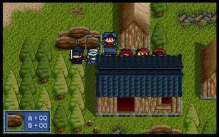
第二关
亚雷斯要把枪卸掉。
1.索尔和亚雷斯去上面，其它人左行。
2.索尔到他能到的最远处，亚雷斯到屏幕中央，敌人出现位置下面一格，其他人继续左行。
3.亚雷斯到左下给村民吃一个药草，索尔不动。盖亚把村民下方的盗贼打死，哈诺继续前进，悠妮随意。
4.村民会下来一格，盖亚和哈诺各打死一个盗贼给村民开路。其他人随意。
现在第一个力量药水就到手了（第二章全救村民可以得到一个力量药水）。
至此所有村民获救还留下至少3个3级盗贼可以练级。这时盖亚，5级的索尔（绕过来），和4级的哈诺（穿上刚捡的旅行装）防御都比盗贼的攻击高。以墙和他们3人作为屏障可以让悠妮慢慢练级了，打到多少回合都没问题。这时索尔也可以练到6级了。
我试过把盗贼引到下面的树林里，好象效果不很理想，该一刀杀的还是一刀，可能是现在级别太高了吧。而且电脑总是乱跑，不肯老实休息，因此还是觉得在上面好。
索尔:6.08 盖亚:7.22 哈诺:4.85 悠妮:10.11 亚雷斯:6.01 希莉亚:3.00
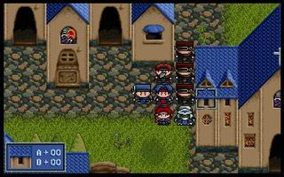
第三关
第一回合 盖亚去拣长弓,其他人向上.
第二回合 盖亚拿长弓,亚雷斯稍走慢些.
第三回合 亚雷斯杀掉3点的盗贼,盖亚向上走,其他人杀掉挡住的2人.
第四回合 杀掉铁诺周围血3点的盗贼,盖亚继续向上走.
第五回合 向下形成对盗贼的包围(利用桥上的洞),盖亚继续向上.
第六回合 杀掉右边洞下的盗贼,盖亚到洞右下等待.敌精英战士会走到洞下,至此,包围形成.希莉亚机动打后面的,亚雷斯打精英战士.
这关我围住了一个精英战士和4个士兵,呵呵.
索尔:9.05 盖亚:9.19 哈诺:10.00 悠妮:15.06 亚雷斯:12.16 希莉亚:8.11 铁诺:4.00
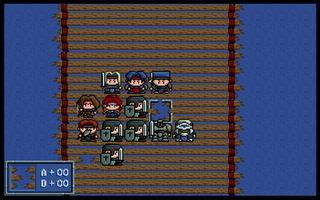
第四关
在这关终于忍不住买了几件衣服,不然太难练了。本关的兽人在一个被杀之后才会逃走，所以只要注意上方出现的两个在同时干掉就行了。下方的一般跑不掉，要是能留下练级就最好了，因为兽人开始逃跑后他就不攻击了（即使你的防御低于兽人的攻击也一样），而兽人的血又仅少于boss。
索尔:16.86 盖亚:10.21 哈诺:13.75 悠妮:19.50 亚雷斯:16.50 希莉亚:12.72 铁诺:10.67
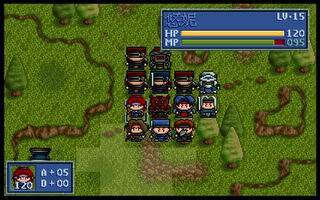
第五关
第一回合 哈诺向右去拣淬毒刃,铁诺向右去开最左边的箱子(力量药水),玛琳拣长剑,其他人向上。
第二回合 继续
第三回合 哈诺、铁诺继续,其他人靠近敌人。
第四回合 哈诺、铁诺继续,其他人看情况杀一两个强盗(血少的)。
第五回合 亚雷斯继续向右(此时敌人应向下移动了),哈诺往回走，希莉亚向左支援铁诺，铁诺继续，其他人往回走。
第六回合 亚雷斯继续向右,哈诺继续往回走，希莉亚继续向左，铁诺拣箱子，其他人往回走。
第七回合 亚雷斯在适当位置站好（按个人喜好了），哈诺停下，铁诺向右走一点
希莉亚继续向左，其他人在下方布好位置。
第八回合 兽人出现，亚雷斯杀掉兽人（应能一下毙命了），铁诺和希莉亚杀掉另一个，哈诺向左堵住一个兽人回去的路，其他人堵住另一个兽人。
第九回合 兽人开始逃跑（不会再主动攻击了），现在可以堵住兽人慢慢练了。剩下的就是布置位置等敌人过来了。如果想让卡特那（女首领）从上面过来，亚雷斯就向左走快些，如果想卡特那（女首领）从下面过来，亚雷斯就慢些走，可以适当的休息一回合。
我之后是在亚雷斯把剩下两个箱子都拣完后才回来的，开始在回合上可能有一些损失，不过最后几回合估计就不用那么着急了。象第一关我为了拣5000元，第四关为了拣阔剑都不得不在252回合就开始跑，没法让敌人继续休息了。
三个盗贼头目两个有5000元,一个有红宝石.
本关要注意练索尔和哈诺，级别到28就可以挡住下关的莱汀骑士团了（当然要买衣服，锁子甲防御+40，夜行装防御+36，可惜锁子甲只有哈诺能用）。盖亚不用太在意，随便练练防御就够了，不得不说盖亚防御超变态。
索尔:28.22 盖亚:14.63 哈诺:26.77 悠妮:25.90 亚雷斯:22.04 希莉亚:17.07 铁诺:19.25 玛琳:15.61
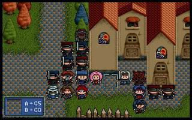
第六章
总算打完了,整整一个星期阿.
本关索尔完全可以升到40的,不过升了也没用吧,要到13章才能拿到勇者徽章.悠妮就更别说了,要到15关才行.用小火焰慢慢烧吧.希莉亚狂长23级,呵呵.玛琳一点也没和敌人骑士纠缠,只是和3个法师一点点砍就砍到了28了,一个魔法水也没用.
索尔:39.67 盖亚:26.53 哈诺:34.02 悠妮:31.59 亚雷斯:37.65 希莉亚:40.06铁诺:30.00 玛琳:28.23 贝克威:9.00
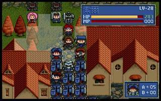
第七章
本关主要就是把凯丽救出，也就是在⒈０回合内大约在下列地点处休息∶
(10,11)、(11,15)、(12,15)、(13,16)、(14,16)、(15,16)
索尔:39.91 盖亚:26.91 哈诺:35.38 悠妮:40.02 亚雷斯:38.65 希莉亚:1.39 铁诺:38.12 玛琳:40.09 贝克威:34.73 凯丽:10.00
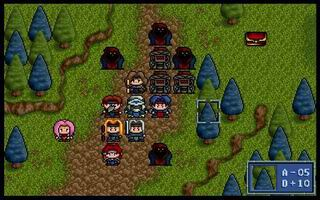
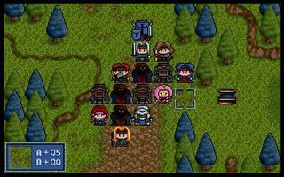
第八章
本关可是我到目前为止拦住最多人练级的关,在魔法师魔费光后，先让凯丽打魔法师练，然后练铠甲武士，在玛琳加防御术后防御就应该够高能够不让铠甲武士攻击了，最后在铠甲武士顶不住一下时，练突击骑兵。洛娜开始时练铠甲武士两边的骑士，以洛娜超强的防御增加值（每升一级dp+6)，很快就可以超过骑士，好练的很，然后练凯丽打不到的铠甲武士。等凯丽不能打铠甲武士时再让洛娜练，这样本关洛娜也能达到34级。
哈诺，亚雷斯，铁诺在玛琳和洛娜练小兵时就打突击骑兵把级别练到40了，很简单，还剩了几次给希莉亚射，呵呵。
贝克威就是拣边角下料，找没人够的到的射，就这么也混到40了。
玛琳在开始使了几次回复术后就开始试用防御术，每次17点经验（用mp5点），比用治疗强多了。
本关过后
索尔:40.03 盖亚:27.95 哈诺:40.07 悠妮:40.02 亚雷斯:40.12 希莉亚:6.43 铁诺:40.12 玛琳:14.34 贝克威:40.02 凯丽:33.51 洛娜:34.22(刚出来时12.00)
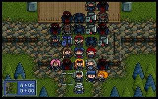
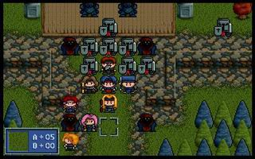
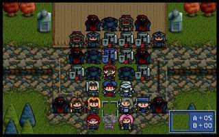
第九章
本关只有boss还能练练,其他的人阿，太弱了。除了boss外一定要留一个敌人,否则练boss会痛苦死(一连击就结束).
索尔:40.03 盖亚:30.00 哈诺:5.75 悠妮:40.02 亚雷斯:7.23 希莉亚:9.07 铁诺:7.25 玛琳:29.23 贝克威:7.17 凯丽:36.11洛娜:40.02
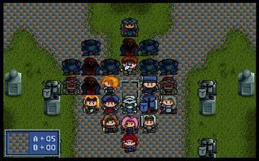
第十章
没什么好说的，就是留下boss练，其他人组成阵形来使防御术。
索尔:40.03 盖亚:30.16 哈诺:9.20 悠妮:40.02 亚雷斯:8.52希莉亚:10.42 铁诺:19.75 玛琳:39.97 贝克威:8.51 凯丽:36.25洛娜:2.13 莱汀:18.00 索非亚:16.00
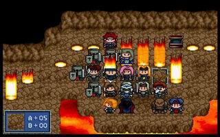
第十一章
本关珊会跟随贝克威走,不过还是让珊死掉就算了，留着太麻烦。
索尔:40.03 盖亚:33.53 哈诺:14.08 悠妮:40.02 亚雷斯:8.66希莉亚:11.72 铁诺:19.75 玛琳:40.04 贝克威:13.25 凯丽:36.25洛娜:11.24 莱汀:40.01 索非亚:38.14 珊:16.00
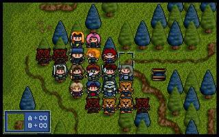
第十二章
这关的bug需要加以利用（杀掉兽人首领电脑援军就会出现，如果在电脑援军出现时，在电脑援军的出现地点有我方人员，则打那个电脑会减自己人的血）?我不这么认为,打自己人也不给经验,还浪费一回合(杀掉兽人首领也让我心疼阿).法师我觉得用回复术或复生术来升级比用防御术和速度术慢多了.平时就普通攻击就好了.连枷是两格攻击,练级再好没有了,这关地形又好,珊在这关到40再容易没有了.
前几回合三个龙骑尽力向上走,站好位,其他人慢慢走,把米亚斯多德引下来.注意不要让米亚斯多德中毒,不然他会补给一回合,这样就慢了一步了.本关米亚斯多德跟随贝克威走,只好牺牲贝克威了.
索尔:40.03 盖亚:34.80 哈诺:21.08 悠妮:40.02 亚雷斯:9.46希莉亚:12.32 铁诺:21.88 玛琳:40.04 贝克威:13.25 凯丽:40.08洛娜:15.45 莱汀:7.94 索非亚:40.37 珊:40.03 米亚斯多德:21.00
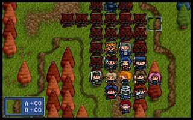
第十三章
(35,17)兽人-速度药水 (27,13)兽人-10000元 (31,14)兽人-速度药水(38,11)黑暗射手-10000元 (39,16)兽人-回复剂 (29,19)兽人-回复剂(25,6)兽人-10000元 (27,4)黑暗法师-10000元 (10,3)兽人-蓝宝石
本关兽人身上的宝物多的很,应该计划一下怎么拿.
第一回合:这回必须先拿心眼之书,否则有蓝宝石的兽人就会拿走心眼之书,再杀兽人也就只能拿到心眼之书了.虽然在(25,6)的兽人会被杀少10000元,不过权衡利弊还是要蓝宝石合算.
第二回合:这回合黑暗法师会挂，所以要先抢他那10000元。
以后的回合就没什么好说了，注意有宝物的兽人，杀吧。
索尔:40.03 盖亚:35.42 哈诺:21.80 悠妮:40.02 亚雷斯:9.94希莉亚:12.92 铁诺:22.58 玛琳:40.04 贝克威:13.73 凯丽:40.08洛娜:16.38 莱汀:8.89 索非亚:1.92 珊:3.03 米亚斯多德:21.87哈瓦特:23.00
第十四章
本关只要不到一定位置,电脑就不会动,所以先把所有人都走到大概位置再同时前冲即可占据有利位置.
本关珊可以用轰雷术来升级（一次就是99点经验），一次一级痛快极了。
索尔:15.01 盖亚:41.11 哈诺:31.01 悠妮:40.02 亚雷斯:17.43希莉亚:16.27 铁诺:23.80 玛琳:40.04 贝克威:21.35 凯丽:40.08洛娜:22.60 莱汀:15.21 索非亚:31.80 珊:30.00 米亚斯多德:40.08哈瓦特:40.10
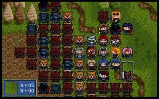
第十五章
本关赛可邦特跟随索尔行动,只好牺牲索尔不让他练级了。开始3个龙骑要加速前进否则就赶不上4个兽人了，4件宝物啊！
在这关珊练级用炎龙术就很好用了，毕竟能拦住的人不如上关多。
索尔:18.10 盖亚:48.54 哈诺:40.12 悠妮:40.02 亚雷斯:19.75希莉亚:25.64 铁诺:30.20 玛琳:40.04 贝克威:27.03 凯丽:40.08洛娜:23.97 莱汀:20.42 索非亚:40.11 珊:40.00 米亚斯多德:15.75哈瓦特:18.58 赛可邦勒:23.00
本关我存了600000，可以买60个力量药水，加上以前获得的5个和以后的6个，总共有71个力量药水，也就是可以给凯丽加71*9=639点ap了，呵呵。
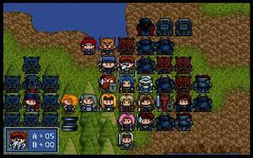
第十六章
本章只能练18个回合,没什么好说的,用玛琳的传送把电脑进攻的路堵住就完了。
索尔:21.56 盖亚:48.95 哈诺:40.12 悠妮:4.95 亚雷斯:20.82希莉亚:25.64 铁诺:32.39 玛琳:40.04 贝克威:28.75 凯丽:40.08洛娜:25.13 莱汀:20.89 索非亚:40.11 珊:40.00 米亚斯多德:17.75哈瓦特:21.65 赛可邦勒:23.90 蜜蒂:1.00
第十七章
第五回合会有6个援军出现，所以先等待让援军先上去送死会更容易布阵。
本章我把哈诺和珊这两个超过40的人留下，带上了会传送玛琳和行动术的索非亚。总算知道为什么赛可邦勒难练了，防御超低还没地方卖可以穿的衣服。
首先让跑的快的洛娜、莱汀和亚雷斯去捡宝箱，其他人向下和索尔汇合。等到援军出来并死掉之后再向上走。
本章魔法师的站位实在是太帅了是会再生术的人升级的好机会。布阵时在正中间的位置做两个中间相连的十字，保证每次两个魔法师都能正好打中。而且一个再生术的范围也正好可以覆盖。练完下面这两个魔法师后，再上一层，在左边练，仍旧用这种阵型，然后是右边。这样可以保证每次索尔或哈瓦特都有99的经验，升级太爽了。
注意最上层的两个黑暗战士开始时不要动，因为他们一费血水魔神立刻就会用神恩术给他们补血，太浪费了，还是等到魔法师练完后再同时打三人比较合算。
黑暗法师在没魔后只要没在他的攻击范围内就会休息,攻击类型也是使用魔法杖,不会引起反击，好好利用这点可以让蜜蒂和凯丽迅速升级，毕竟还是魔法师的经验多。这关也是第一次我的人分散开升级，3个龙骑士和龙剑士走到外围打黑暗战士升级，其他人在内层堵住水魔神。
索尔:30.90 盖亚:59.97 哈诺:40.12 悠妮:29.92 亚雷斯:34.39希莉亚:30.69 铁诺:40.05 玛琳:40.04 贝克威:33.39 凯丽:20.47洛娜:40.06 莱汀:31.62 索非亚:40.11 珊:40.00 米亚斯多德:27.14哈瓦特:31.50 赛可邦勒:40.10 蜜蒂:20.42 凯拉斯:2.00
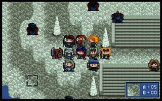
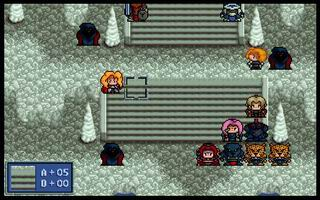
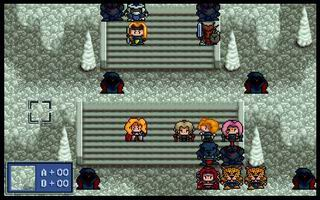
第十八章
本关约拿和兰斯洛特会和索尔一起行动,由于开始会有敌人援军从后面出现,考虑到约拿和兰斯洛特所能到达的位置,所以应以援军为主力练级对象。
让约拿和兰斯洛特尽力走的话,到援军出现时,约拿和兰斯洛特正好在楼梯上,在约拿的魔用完后,约拿和兰斯洛特就会走到下面,不再影响上面的练级和布置了。
在到了200回合左右,留下4个不需要练级的(我留下的是悠妮、玛琳、索非亚和洛娜）,其他的人去接受魔法师炎龙的轰击吧。索尔和哈瓦特也可以升成40了。
索尔:40.09 盖亚:63.48 哈诺:40.12 悠妮:40.02 亚雷斯:36.57希莉亚:34.11 铁诺:40.05 玛琳:40.04 贝克威:40.06 凯丽:28.47洛娜:40.06 莱汀:34.66 索非亚:40.11 珊:40.00 米亚斯多德:31.91哈瓦特:40.11 赛可邦勒:28.01 蜜蒂:34.71 凯拉斯:32.97 兰斯洛特:4.00约拿:5.00?
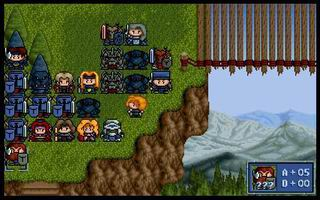
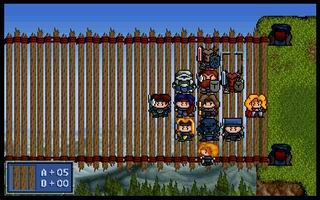
第十九章
几个龙骑上去抢东西其他人迅速向上组成阵型接受敌人魔法师的轰击吧，只要有足够的魔法水，可以保证约拿一回合一级了，呵呵。位置的选择就在两个魔法师中间，两个人能同时使用炎龙打到不同的四个人为好（见图）。注意不要让大祭师把约拿封咒了，没办法就算杀了吧。
第七回合龙剑士巴拿罗西亚会在左下出现,这时应是我方在重重围困中了,先在下面躲着，等敌人魔法师法术用完后再用传送术传进来就好了。
本章大多数人都可以练到双40了，只是为了下一关能多有几个人杀人才多留了2个没到双40。这章以后练级就轻松了，因为每关练的人少多了。
索尔:40.09 盖亚:68.26 哈诺:40.12 悠妮:40.02 亚雷斯:40.08希莉亚:40.11 铁诺:40.05 玛琳:40.04 贝克威:40.06 凯丽:40.04洛娜:40.06 莱汀:40.07 索非亚:40.11 珊:40.00 米亚斯多德:38.51哈瓦特:40.11 赛可邦勒:38.95 蜜蒂:40.09 凯拉斯:40.05 兰斯洛特:40.00约拿:40.05 巴拿罗西亚:40.14
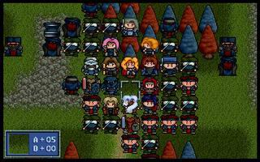
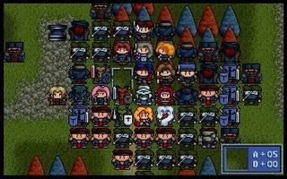
第二十章
迅速杀掉电脑(15回合内)，不要忘了拿暗之眼(31,8)就好了。
索尔:40.09 盖亚:71.11 哈诺:40.12 悠妮:40.02 亚雷斯:40.08希莉亚:40.11 铁诺:40.05 玛琳:40.04 贝克威:40.06 凯丽:40.04洛娜:40.06 莱汀:40.07 索非亚:40.11 珊:40.00 米亚斯多德:40.21哈瓦特:40.11 赛可邦勒:40.09 蜜蒂:40.09 凯拉斯:40.05 兰斯洛特:40.00约拿:40.05 巴拿罗西亚:40.14 谢多:14.43 达可塞:10.00
第二十一章
两边同时向上走，同时龙骑和龙剑士去拣箱子。等我方弓箭手死光后，用传送术把会传送术的人传到台上做接力把罗兰和希尔法传出去，在上面以柱子为基础布好位置。注意要将电脑的弓箭手先杀掉，开始时他们对罗兰和希尔法是个极大的威胁（攻击范围太大了）。
局势稳定后把盖亚传到BOSS处拿四个狂战士练级（该死的BOSS用的雷神鞭可以使用魔法攻击没法拿他练级，可惜了那？？？的血了）。到一击必杀之后，盖亚就可以开始杀人了，反正其他人练级也用不到这些人。
当谢多防御上414后可以把他单独传到罗兰和希尔法开始在的台上练级。
谢多满40后可以将达可塞传去练级，同时将谢多传回布阵用。
最后上面只剩希尔法和罗兰练级之后，挡住几个黑暗骑士专门给希尔法练级就好了，当然要给希尔法加破坏神（从来没感觉破坏神这么好用过，呵呵）。最后我的几个魔法师的魔法几乎都用光了，再生术、传送、攻击术、防御术、行动术，对希尔法真是重点照顾啊。
本关凯丽开始吃力量药水，本关吃了7*6+18=60个。
本关电脑的防御都太高,不利于魔法师升级，多准备几个魔法水就好练多了(可惜我一个也没带)。
索尔:40.09 盖亚:85.63 哈诺:40.12 悠妮:40.02 亚雷斯:40.08希莉亚:40.11 铁诺:40.05 玛琳:40.04 贝克威:40.06 凯丽:40.04洛娜:40.06 莱汀:40.07 索非亚:40.11 珊:40.00 米亚斯多德:40.21哈瓦特:40.11 赛可邦勒:40.09 蜜蒂:40.09 凯拉斯:40.05 兰斯洛特:40.00约拿:40.05 巴拿罗西亚:40.14 谢多:40.41 达可塞:40.04 希尔法:40.08罗兰:40.00
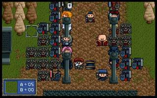
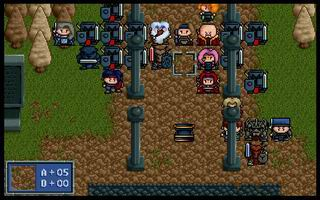
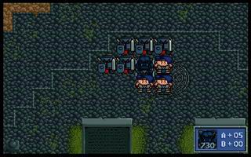
第二十二章
第4、8回合电脑会来援军，5回合莎拉会出现。
开始就把盖亚传到boss处练级（开始先休息等boss的魔法用光后再练级）。其他人在下面布阵帮助莎拉练级。这关练级比较容易，只练到91回合所有人就全满了。
力量药水，本关吃了9个，加上上一关的60个共有69个。
索尔:40.09 盖亚:99.00 哈诺:40.12 悠妮:40.02 亚雷斯:40.08希莉亚:40.11 铁诺:40.05 玛琳:40.04 贝克威:40.06 凯丽:40.04洛娜:40.06 莱汀:40.07 索非亚:40.11 珊:40.00 米亚斯多德:40.21哈瓦特:40.11 赛可邦勒:40.09 蜜蒂:40.09 凯拉斯:40.05 兰斯洛特:40.00约拿:40.05 巴拿罗西亚:40.14 谢多:40.41 达可塞:40.04 希尔法:40.08罗兰:40.00 莎拉40.11
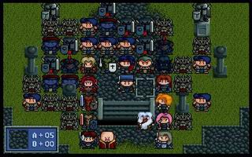
第二十三章
本章罗德曼不能加入，所以回合限制也就没有了，练级的人只剩卡里斯一个。
开始就给卡里斯加上破坏神直接把他传上去练级就行了。
电脑一共有两批援兵，最高破坏力是750。
索尔:40.09 盖亚:99.00 哈诺:40.12 悠妮:40.02 亚雷斯:40.08希莉亚:40.11 铁诺:40.05 玛琳:40.04 贝克威:40.06 凯丽:40.04洛娜:40.06 莱汀:40.07 索非亚:40.11 珊:40.00 米亚斯多德:40.21哈瓦特:40.11 赛可邦勒:40.09 蜜蒂:40.09 凯拉斯:40.05 兰斯洛特:40.00约拿:40.05 巴拿罗西亚:40.14 谢多:40.41 达可塞:40.04 希尔法:40.08罗兰:40.00 莎拉:40.11 卡里斯:40.09
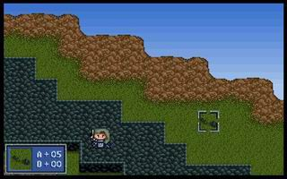
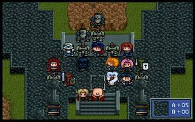
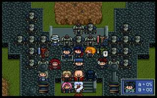
第二十四章
极简单，一回合过关（反正又没可练的人了）。
索尔:40.09 盖亚:99.00 哈诺:40.12 悠妮:40.02 亚雷斯:40.08希莉亚:40.11 铁诺:40.05 玛琳:40.04 贝克威:40.06 凯丽:40.04洛娜:40.06 莱汀:40.07 索非亚:40.11 珊:40.00 米亚斯多德:40.21哈瓦特:40.11 赛可邦勒:40.09 蜜蒂:40.09 凯拉斯:40.05 兰斯洛特:40.00
约拿:40.05 巴拿罗西亚:40.14 谢多:40.41 达可塞:40.04 希尔法:40.08罗兰:40.00 莎拉:40.11 卡里斯:40.09
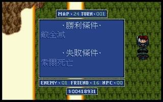
第二十五章
第七回合我方还有一部分援军，所以开始不要猛杀人，不然一会就没什么人练级了（电脑自动下来的只有其中一部分）。
50多回合就结束战斗了。
索尔:40.09 盖亚:99.00 哈诺:40.12 悠妮:40.02 亚雷斯:40.08希莉亚:40.11 铁诺:40.05 玛琳:40.04 贝克威:40.06 凯丽:40.04洛娜:40.06 莱汀:40.07 索非亚:40.11 珊:40.00 米亚斯多德:40.21哈瓦特:40.11 赛可邦勒:40.09 蜜蒂:40.09 凯拉斯:40.05 兰斯洛特:40.00约拿:40.05 巴拿罗西亚:40.14 谢多:40.41 达可塞:40.04 希尔法:40.08罗兰:40.00 莎拉:40.11 卡里斯:40.09 圣寇拉斯40.35 亚奇梅吉20.00
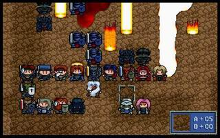
第二十六章
最后一个练级的章节了，渥德比较难达到最大攻防，不过和前面的龙骑士比，简直就容易太多了。
开始传送几个龙骑士和龙剑士去拣东西，顺便把几个法师挂了（法师的魔法太厉害了，我800多血的洛娜竟然被他秒杀，汗）。东西拿到后全员收缩，以底边为基础摆开阵势练级。这样做主要是为了亚齐梅吉加攻击术练级方便，当然水晶粒到现在也没什么用了，全部加给亚齐梅吉用裂地术升级吧。
本章记得多带几根手臂给渥德换着用（渥德攻击升的很快的）。
166回合结束战斗。
索尔:40.09 盖亚:99.00 哈诺:40.12 悠妮:40.02 亚雷斯:40.08希莉亚:40.11 铁诺:40.05 玛琳:40.04 贝克威:40.06 凯丽:40.04洛娜:40.06 莱汀:40.07 索非亚:40.11 珊:40.00 米亚斯多德:40.21哈瓦特:40.11 赛可邦勒:40.09 蜜蒂:40.09 凯拉斯:40.05 兰斯洛特:40.00约拿:40.05巴拿罗西亚:40.14 谢多:40.41 达可塞:40.04 希尔法:40.08罗兰:40.00 莎拉:40.11 卡里斯:40.09 圣寇拉斯40.35 亚奇梅吉40.20渥德:99.00
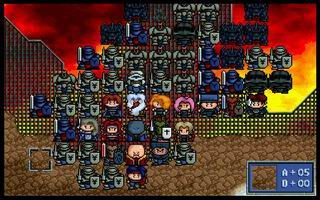
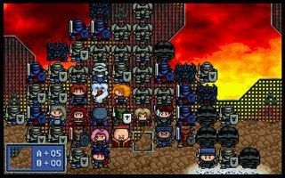
第二十七章
传送凯丽到机甲队长身边，先干掉一个，到敌人行动时靠反击就把机甲队长全灭了。魔龙爪真是bt连反击都是2次攻击。
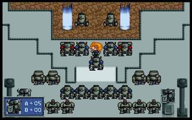
第二十八章
传送凯丽和索非亚到机甲队长身边，一回合结束，本关的箱子不拣也罢，一点用也没有。
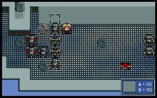
第二十九章
本关至少要用四个回合（悠妮休息就要三个回合），记得把二十七章拿到的最后一个力量药水吃掉，至此凯丽共吃力量药水71个，ap为910+71*6=1336了。
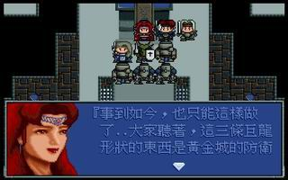
第三十章
第一回合把几个人聚集到一起。
第二回合达可塞放攻击术，索尔、悠妮、玛琳、希尔法分别把盖亚、凯丽、蜜蒂和索非亚传过去。攻击加行动术果然在一回合内消灭掉空魔神了。
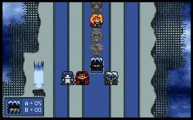 |